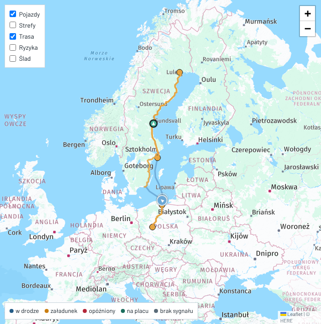
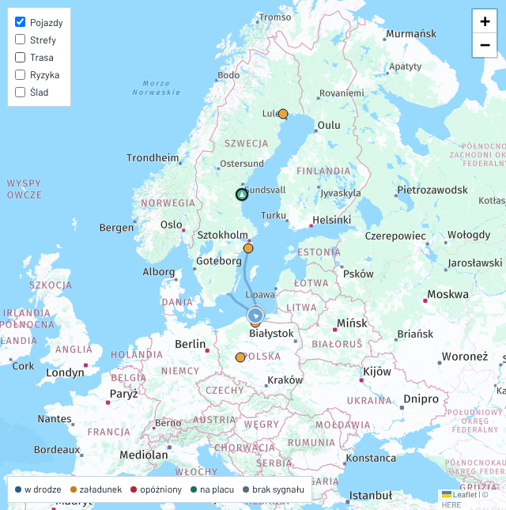
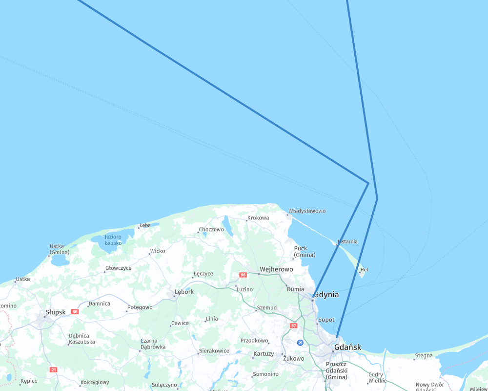
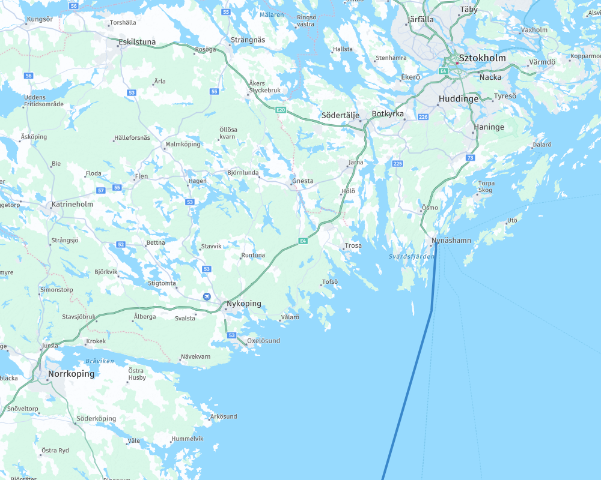
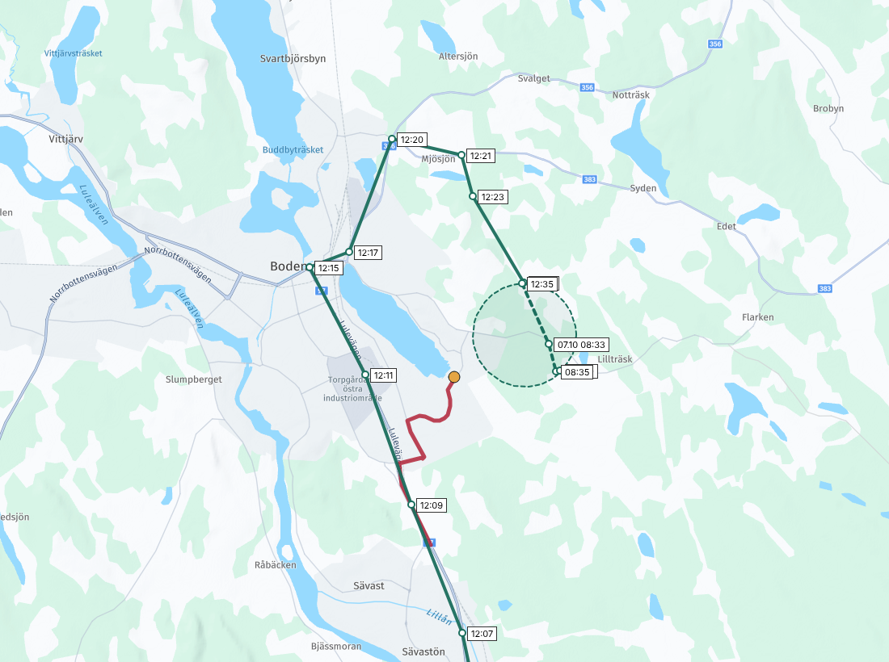
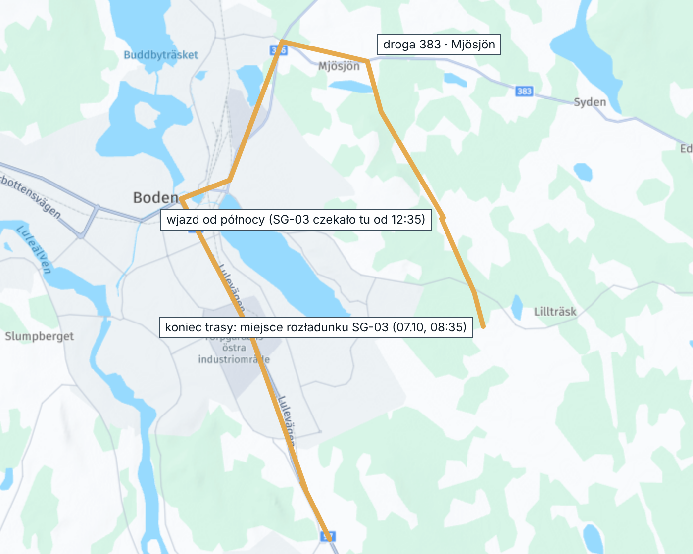
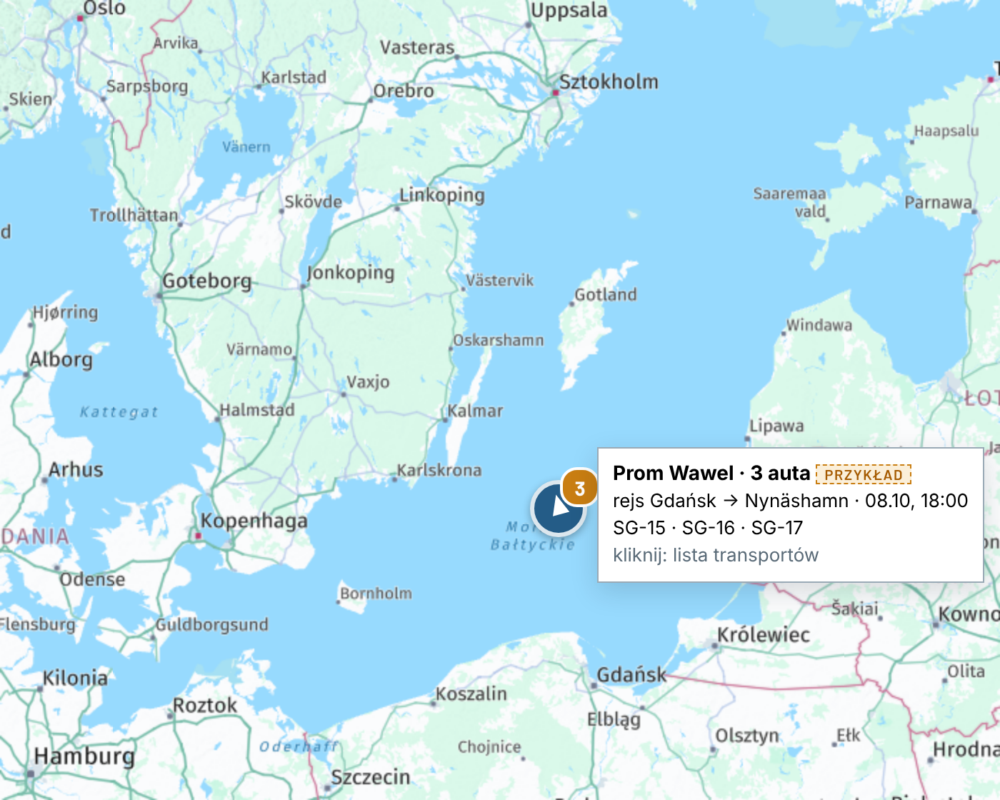

E45 · Mapa: trasy promów, ostatni odcinek w Boden, grupowanie na promie i w jednym miejscu · komputer
„Dziś” — zrzuty aplikacji i podkład HERE 07.10 · trasa SG-03 z pozycji w bazie · grupowanie na promie to przykład
Dziś
Mapa dziśkropki i promy zawsze widoczne

Pomarańczowa: trasa drogowa z HERE. Niebieskie: dwie linie promów rysowane ręcznie (9 i 7 punktów). Pomarańczowe kropki: Śrem, Gdańsk, Nynäshamn, „Stalverket 20” w Boden. Zrzut 07.10, 22:2x.
Po odznaczeniu „Trasa”zostają promy i kropki

Znika tylko trasa drogowa. Dla linii promów i kropek nie ma checkboxa (w kodzie zawsze włączone).
Promy: linia Watch Tower a linie promów na podkładzie HERE
Gdańsk i Gdynia

Watch Tower Cienkie przerywane linie to promy na podkładzie HERE. Linie Watch Tower idą obok nich.
Nynäshamn

Watch Tower wychodzi z Nynäshamn na południowy zachód, a promy HERE idą na południe i południowy wschód przez archipelag.
Boden: ostatni odcinek
Dziśkończy się 591 m przed strefą placu

trasa Watch Tower (HERE)SG-03, pozycje co 2 min Trasa zjeżdża z Luleåvägen w strefę przemysłową i kończy się na kropce „Stalverket 20”. SG-03 pojechało przez Boden, drogą 356, 383 i od północy do placu. Kreskowane: 07.10, wjazd i rozładunek.
Po zmianiejak jechało SG-03

Koniec trasy w miejscu rozładunku SG-03, wjazd od północy. Linia w makiecie łączy pozycje co 2 min. Po zmianie pójdzie po drogach: HERE do drogi 383, dalej (ok. 2–3 km, na podkładzie tylko cienka linia) z zapisanych pozycji SG-03.
Warstwy i prom
Checkboxy na mapie
Dziś
Po zmianie
Promy i kropki zawsze, bez checkboxa.
Kropek portów, załadunku i rozładunku nie ma wcale. Miejsca widać jako strefy (checkbox „Strefy”).
Auta na promie: jeden znacznikPrzykład

Przy statusie „Na promie” auta tego rejsu są jednym znacznikiem na pozycji statku z AIS, z liczbą aut. Po najechaniu: rejs i kody. Po kliknięciu: lista transportów. Po zejściu z promu — znów osobne znaczniki. Tak samo auta w jednym miejscu (decyzja 09.10 13:09): więcej niż 1 auto w strefie załadunku, portu PL, portu SE albo placu (E34) → jeden znacznik z liczbą; po najechaniu nazwa miejsca i kody, po kliknięciu lista; po wyjeździe ze strefy — osobne znaczniki. Na Mapie i w Kokpicie.